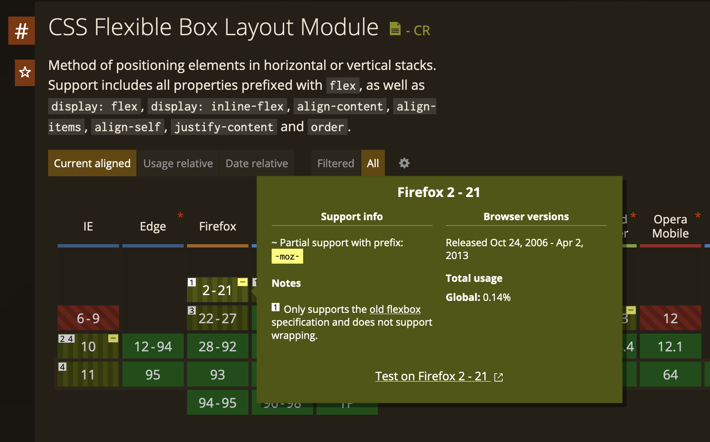
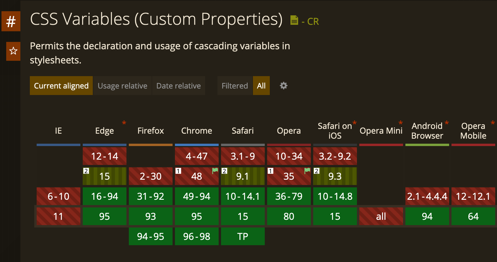

CSS Preprocessors
Gloria und Julian
Was ist ein Präprozessor?
- Eine Art "Konverter" zur Verarbeitung von Eingabetext in das Ergebnis
Precompiled Example
Compiler
Compiled Example
Welche CSS Präprozessoren gibt es?
- SCSS
- SASS
- LESS
- CSS-abwärtskompatibel
.wrapper {
.externerLink {
color: red;
}
}
Datei.scss
.wrapper
.externerLink
color: red
Datei.sass
Mixins
- Vergleichbar Methode
- Vererbbar
@mixin abstandMitRahmen ($links, $rechts, $oben, $unten) {
margin: $oben $rechts $unten $links;
border: 1px solid green;
}
.klasse1 {
@include abstandMitRahmen(5px, 5px, 5px, 5px);
}
.klasse2 {
@include abstandMitRahmen(5px, 5px, 5px, 5px);
}
@mixin browserPrefix($property, $options) {
$prefixes: ('-webkit-', '-moz-', '-o-', '');
@each $prefix in $prefixes {
#{$prefix}#{$property}: $options;
}
}
.rounded-corners {
@include browserPrefix(border-radius, 10px);
}
Datei.scss
.rounded-corners {
-webkit-border-radius: 10px;
-moz-border-radius: 10px;
-o-border-radius: 10px;
border-radius: 10px;
}
Datei.css
Mixins (Browserkompatibilität)
- Stellen vollautomatisch Prefixe für ältere Browserversionen bereit
@mixin browserPrefix($property, $options) {
$prefixes: ('-webkit-', '-moz-', '-o-', '');
@each $prefix in $prefixes {
#{$prefix}#{$property}: $options;
}
}
.rounded-corners {
@include browserPrefix(flex, 3);
}
Datei.scss
.rounded-corners {
-webkit-flex: 3;
-moz-flex: 3;
-o-flex: 3;
flex: 3;
}
Datei.css

Nesting
- Verschachteln von CSS-Klassen und Anweisungen
.wrapper {
.externerLink {
color: red;
}
}
Datei.scss
.wrapper .externerLink {
color: red;
}
Datei.css
Variablen
- Mehrfachverwendung
- Mittlerweile auch in CSS möglich nur eingeschränkt!
$primary-color: blue;
.btn {
border-color: $primary-color;
.text {
color: $primary-color;
}
}
Datei.scss
.btn {
border-color: blue;
}
.btn .text {
color: blue;
}
Datei.css

Variablen
- Einsparung des geschriebenen Codes
$primary-color: blue;
$secondary-color: green;
.btn {
background: $primary-color;
.text {
color: $secondary-color;
}
}
Datei.scss
.btn {
background: blue;
}
.btn .text {
color: green;
}
Datei.css
CSS Preprocessors
Vielen Dank!
Quellen
- https://dev-supp.de/blog/sass-vs-scss-vs-less
- https://sass-lang.com/
- https://nextgeneration.mysign.ch/de/themen/wissen/frontend-entwicklung/scss-sass.html
- https://lesscss.org/
- https://developers.shopware.com/designers-guide/less/
- https://codepen.io/julian-fle/pen/eYEGZmb
- Als Tool: https://jsonformatter.org/scss-to-css
- https://getbootstrap.com/
- https://fontawesome.com/
- https://sass-lang.com/styleguide/brand
- https://developer.mozilla.org/de/docs/Web/CSS/box-flex